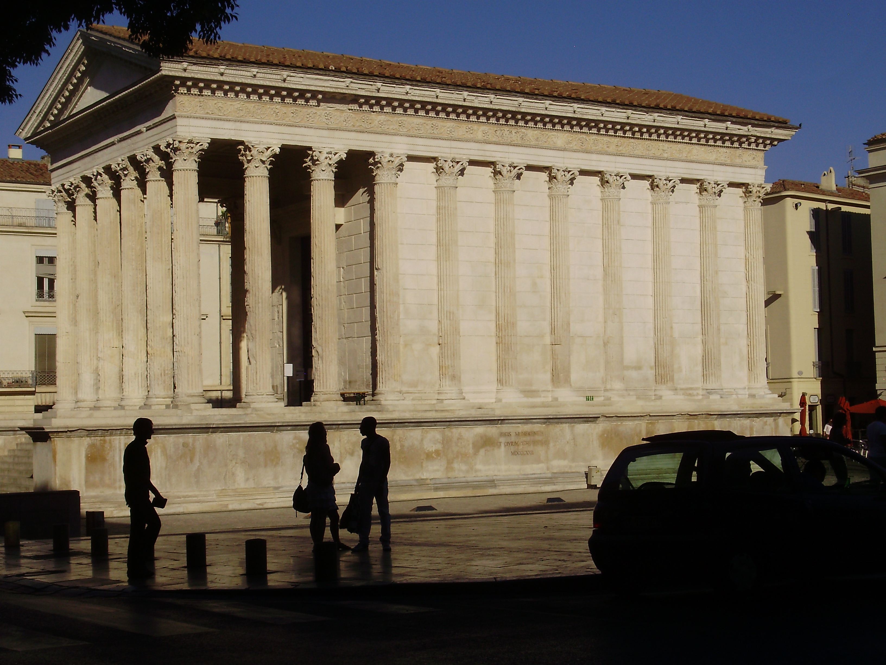

Two bronze columns were placed in front of Augustus’ Mausoleum at Rome after the death of the princeps in 14 CE. These columns were inscribed with a text describing the “Res Gestae of the Divine Augustus” (RGDA).1 The prose of the inscription was relatively “simple” and full of officialese phrases that some scholars would suggest provide very little insight into how Augustus actually viewed his achievements.2 Others see the text as “a complex and allusive document, addressed to many audiences and with many levels of meaning.”3 No matter what way one decides to read the Res Gestae, though, it still represents perhaps the most definitive statement that exists of how Augustus framed his work at Rome for posterity.4 It is truly a monument both of and to the Augustan age.
This dissertation argues that the Res Gestae is also a text whose monumentality needs be understood within the context of other literary monuments of the Augustan age.5 The RGDA demonstrates how Augustus used architecture – as much in his language as in the landscape of the city – to redefine the way his subjects would see their restored res publica on a continuum from Rome’s humble beginnings to its “collapse” at the end of the republic and finally to its monumental transformation under Augustus.6 But this monumentalization of Rome in the Roman imagination was by no means the project of the princeps alone. Horace, Vergil, and Ovid each added “monuments” of their own which would anticipate the different ways in the Res Gestae that Augustus himself would articulate his reconstruction of Rome – both as a city and as an idea. Subsequent chapters will look in particular at how these three poets of the Augustan age both critiqued and contributed to a metaphorical transformation of Rome from crumbling brick to monumental marble in the Roman imagination as much as in its physical reality.7
To examine this shared project of the princeps and the Augustan poets it will first be necessary to understand how each of them negotiated his position from within the Roman tradition of viewing their world architecturally. The current chapter will outline some aspects of this tradition by briefly analyzing a few of the ways that architecture helped to determine how the Romans structured their reality conceptually.8 I will begin in Part 1 by analyzing the fundamental link between architecture and order (political and otherwise) in Vitruvius’ De architectura. Part 2 will then look at architecture’s essential role in the Roman “art of memory” (ars memoriae). In Part 3 the ideas of the preceding two sections will be applied to exploring the concept of Roman monumentality, with particular attention to how “monuments” (monumenta) provided an opportunity for Romans both to remember their past and critically examine how it fit within their present. This survey will end by then turning in Parts 4 and 5 to how two Romans – the historian Livy and Augustus himself – used a common language of monumental architecture at the beginning of their respective texts to represent the work they did to help “rebuild” Rome after the supposed “collapse” of both the res publica and the mores upon which it was founded.9
This survey is not intended to provide a comprehensive analysis of the role of architecture in the Roman imagination. Several of the topics and texts touched upon here have been the subjects of much more thorough studies. My purpose in this chapter is rather to build upon the work of other scholars in order to provide a framework through which we might contextualize how Augustan age poets fashioned their poetic monumenta as contributions to the monumentalization of Rome. The point will be to establish the historical and literary milieu in which to examine why these poets fashioned their works as “monuments” in the first place, as well as to consider how we might understand Augustus’ collective work in Rome as an architectural monumentum in its own right.
Later chapters will demonstrate how Augustus used architecture in his Res Gestae to redefine the traditional boundaries between past and present, between private and public, as well as those between Rome as a republic and Rome as his empire. He fashioned the city itself as a kind of “memory store,” I argue, one which all of its citizens could experience and use to define what it meant to be Roman in the Augustan age. The princeps did not just add new monuments to the city, in other words, but rather made Rome itself a monument, as he took what was a city of brick and left it one of marble.10 The poets of this period used the idea of the monument, too, as a means of expanding, dissolving, and reconstituting the boundaries of their own poetry. This was not just in response to what Augustus was doing; the poets were actively in dialogue with Augustus’ monumentalization of the city, rather, and in such a way that their readers could then also better appreciate and evaluate what was happening to their Rome.11 It is one of the main contentions of this dissertation, in fact, that we can better account for Augustus’ successful monumentalization of Rome by examining in parallel the “architexture” that several contemporary poets built in fashioning their works of literature as “monuments,” too.12 And the purpose of this chapter is to show why it was monumental discourse in particular that served as the language through which Augustus and the poets of his age imagined their works.
Part 1. Architecturally Speaking: The Imagery of Vitruvius’ De Architectura
Perhaps the most suitable place to start exploring the role that architecture played in how Romans structured the world around them conceptually would be with the only architectural treatise that survives intact from antiquity, namely, Vitruvius’ De architectura. The language that this late 1st-century BCE architect employed provides a useful window into the intersection of architectural and political discourse in the Roman imagination. It would seem that for Vitruvius the state could in a sense not exist without its architecture – whether in physical fact, or in even the language one uses to describe it.13 It is through this discourse of monumental architecture that the architect made sense of what Augustus had done to the res publica’s physical and metaphorical foundations. And it should not be surprising, then, to find that Vitruvius’ language anticipates to a certain degree the princeps’ own account of this transformation in the Res Gestae that will be examined at the end of this chapter, as well as throughout the rest of this dissertation.
There is no passage in the treatise that better illustrates the architectural nature of this transformation than the preface addressed to Augustus himself. Vitruvius was quite aware of what the princeps had been doing to the physical appearance of Rome by the mid-20s BCE; in fact, that is why the architect claims to have written his treatise in the first place:
cum uero adtenderem te non solum de uita communi omnium curam publicaeque rei constitutione habere, sed etiam de opportunitate publicorum aedificiorum ut civitas per te non solum prouinciis esset aucta, uerum etiam ut maiestas imperii publicorum aedificiorum egregias haberet auctoritates, non putaui praetermittendum quin primo quoque tempore de his rebus ea tibi ederem… (Vitr. Pr.2)14
When indeed I noticed the concern you had not only for the common life of all and the structure of the state but also concerning the opportunity for public buildings, so that the state would not simply be made greater by the acquisition of provinces, but that the majesty of the empire might also have the illustrious authority of public buildings, I thought I should not let pass the right opportunity to publish the following on these topics for you…”
In the same preface Vitruvius adds that he has dedicated his treatise to Augustus because of what the princeps had done, was doing, and would do to the architectural landscape of Rome. “I began to write this for you,” the architect tells Augustus,
quod animaduerti multa te aedificauisse et nunc aedificare, reliquo quoque tempore et publicorum et priuatorum aedificiorum, pro amplitudine rerum gestarum ut posteris memoriae traderentur curam habiturum… (Vitr. Pr.3)
since I noticed that you had built and continue to build much, and that you would in your remaining time take care of both public and private buildings so that memorials would be passed down to posterity proportional to the size of your achievements…
These two passages demonstrate the importance that Vitruvius believes Augustus attributed to architecture in Rome. In the first one, the architect relates that the princeps erected buildings which had “illustrious authority” (egregias…auctoritates) in order to ennoble the state – even on the same level as the acquisition of new territories. In the second, moreover, Vitruvius suggests that both public and private buildings could serve as memorials (memoriae) to the greatness of Augustus himself in the sense that they would reflect the magnitude (amplitudo) of his military and political achievements. As Kristina Milnor suggests, Vitruvius’ point here is “not simply that [Augustus] has built more, better, and bigger…but rather that he has revealed the ways in which architecture can mean something more than the construction of buildings.”15
That is not the point of my analysis, however. What interests me in these passages is how the architectural language in them configures (and reconfigures) the relationship between architecture and the metaphorical structure of the Roman state. In the first passage, Vitruvius neatly parallels the “structure of the state” (publicae rei constitutio) with its public architecture (publica aedificia) through a non solum…sed etiam construction. Through the ut-clause expressing effort, moreover, Vitruvius suggests that the reason Augustus has been taking such good care of Rome’s metaphorical and physical constitutio is that the princeps himself is aware that the grandeur of the res publica’s physical appearance can affect and indeed amplify the majesty of its metaphorical greatness.
The use of architectural metaphors for the state in republican Roman literature is not new, of course, as we will see below. What is striking here is how by the end of the second passage it would seem that those same sorts of architectural metaphors – and, in particular, the one regarding “size” – have come to represent something other than “the structure” of the republican state. In the first passage, it is the majesty of the state that can be metaphorically increased in size by Augustus’ deeds at home and abroad. In the second, however, the actual buildings of Augustus’ reign, both private and public, suddenly become memoriae for a new kind of metaphorical “structure” to be handed down to posterity. The sense of greatness that these new buildings evoke through their magnificent appearance is now proportional to the great “size” of Augustus’ own “accomplishments” (pro amplitudine rerum gestarum) – and no longer the greatness of state, as it was in the earlier passage.16
The architectural language that Vitruvius employs thus allows the architect to stress the stability and structure that the princeps has restored to the Roman world – something architectural metaphors do quite well in general17 – while at the same time suggesting that a transformation has occurred between the old “structure” of the state and the new one under Augustus. In short, the princeps might be taking care of the “structure” of the res publica; by the end of the preface, however, that constitutio has been transformed from the old republican one to one of Augustus’ own construction that signifies his greatness, and no longer just the state’s.

Augustan temple (Nimes, France)
Vitruvius was an architect, of course, and he was writing about architecture. It should be noted, though, that seeing the state as a building was not uncommon in the context in which Vitruvius was building, writing, and thinking. At the very origins of Latin literature, for example, there is a fragment from the epic Annales of Ennius – famous already in antiquity, as quoted by Cicero at the start of Book V of the De re publica – which proclaims that “the Roman state is founded upon (stat) its mores and men of old.”18 Rome the city and Rome the institution went together to such an extent that the permanence and stability of its material buildings could even represent the structure and stability of the state itself, as Cicero is so eager to suggest of his own house in his De domo sua.19 According to Alexander Demandt, in fact, “the stability of the masonry, the symmetry of the overall system, the subordination of all individual forms to the overall plan make the traits of the Roman political system architecturally visible.”20 That is not to say that Vitruvius should necessarily be taken as wholly representative of how all Romans consciously thought about the structure of their state (if such a thing is even possible to determine). What I would like to suggest is rather that we understand the architect’s work as a more explicit articulation of a deep connection that underlies the way that Romans saw the world around them – a connection not just between the physical and metaphorical idea of the Roman state, but more broadly between the idea of architecture and structure itself.
A sequence of passages from the beginning of Book 2 of the De architectura will help to flesh out this connection further. According to Vitruvius, at least, the relationship between the architectural and political spheres starts at the very beginnings of civilization. It was the discovery of fire, Vitruvius tells us, which led to the near simultaneous invention of architecture, political associations, and even language:
In eo hominum congressu cum profundebantur alitae e spiritu voces, cotidiana consuetudine uocabula ut optigerant constituerunt, deinde significando res saepius in usu ex eventu fari fortuito coeperunt, et ita sermones inter se procreauerunt. […] Ergo cum propter ignis inuentionem conuentus initio apud homines et concilium et conuictus esset natus…coeperunt in eo coetu alii de fronde facere tecta, alii speluncas fodere sub montibus, nonnulli hirundinum nidos et aedificationes earum imitantes de luto et uirgulis facere loca quae subirent. (Vitr. 2.1.1-2)
In this gathering of people when voices were being poured forth supported by breath, they established words, as it so happened, from daily habit. They began then by chance in this way to speak more and more, signifying different objects from habit, and thus invented speech among themselves. […] Therefore when from the invention of fire the first meeting, assembly, and political association among humankind was born…from this gathering some began to make houses of leaves, others to hollow out caves under mountains, and some in the imitation of nests and constructions of swallows began to fashion from mud and twigs places where they could dwell.
This passage is famous for how Vitruvius tells of the origins of architecture in such a way that it “becomes embedded with the memory of primary human symbols, especially of fire and of the hearth, and of shelter.”21 As before, however, the focus of this current study is on the architect’s language. And it is notable that just as humans start building physical structures, they are also said to be “building” language (cf. uocabula…constituerunt) – and with it the very foundations of society.22 It makes sense, then, that Vitruvius’ language itself suggests a correlation between political associations and their architecture: without architecture, there would be no language and no civilization.23 “In other matters, and especially in architecture,” Vitruvius claims, “there are these two components: that which is signified and that which signifies.”24 In Roman architecture, for Vitruvius, it is not just the state that is signified by architectural structures, but the idea of order itself – whether physical, political, or perhaps even linguistic.25
Only a few paragraphs later in Book 2 of the De architectura the reader comes to a passage that confirms more concretely the deep connection between architecture and the Roman state in particular:
apud ceteras quoque gentes et nonnulla loca pari simulique ratione casarum perficiuntur constitutiones. Non minus etiam Massiliae animaduertere possumus sine tegulis subacta cum paleis terra tecta. Athenis Areopagi antiquitatis exemplar ad hoc tempus luto tectum. Item in Capitolio commonefacere potest et significare mores uetustatis Romuli casa et in arce sacrorum stramentis tecta. (Vitr. 2.1.5)
Among other peoples and in certain places, as well, the structures of houses are fashioned in a like and similar way. No less can we pass over the roofs at Marseilles which are made without tiles but with earth joined with straw. The Areopagus at Athens – still an example of antiquity – is roofed with clay. In the same way Romulus’ hut covered with straw on the Capitoline is able to call to mind and signify the mores of antiquity. The same can be said of the roofs of the temples on the citadel.
In the immediately preceding sentences Vitruvius is merely discussing how peoples in different places build their houses with the materials available to them. However, as the architect continues to list the varieties of materials necessary for the various kinds of constitutiones, his language starts to slip between describing the physical structures that remain and the mores (“behavior/customs”) of the people who built them. This transition starts perhaps with a mention of the Areopagus in Athens, which still exists as “an example of antiquity,” but becomes more pronounced in the discussion of Romulus’ hut. “The image here is of a primitive hut,” of course, but as Idris McEwan rightly suggests in her reading of the passage, “primitive construction methods are not its signified matter.” It is such a basic assumption for Vitruvius that the constitutiones of old buildings represent the early “foundations” of the state – the mores upon which it stands, as Ennius and Cicero put it – that he easily transitions from talking about roof-making in Marseilles to the famous Areopagus of Athens to Romulus’ hut in Rome together with the mores that it represents.26
This all appears to be very natural for Vitruvius, though. In his mind, at least, architecture and political structures (together with the language to describe them both) have been closely bound from the very start of human civilization. And it is by practicing architecture, he goes on to claim in the very next paragraph, that humankind not only discovered “other arts and disciplines,” but also advanced “from a wild and savage life to civilized society.”27 It is by doing architecture, in other words, that people began to understand and conceptualize other “structures” – scientific as well as political.28 It is not hard in that case to see why architecture and architectural language are such important parts of how Vitruvius articulates what he sees happening to the landscape of Rome under Augustus both physically and metaphorically. In short, the idea of “structure” – be it political or otherwise – is by its very nature architectural for Vitruvius.29
If we return to Vitruvius’s preface it is perhaps possible to see more clearly now why he is so prone to employ architectural imagery to communicate the changes that Augustus made to the res publica through his public and private buildings. Since systems are inherently architectural for Vitruvius, it makes sense that the architect uses architectural imagery to convey the change in Rome’s system of government – that is, its structure, or in Latin, its consitutio.
Did all Romans consciously see such a deep connection between architecture and the imaginative systems by which they ordered their existence? It is not possible to determine that with any certainty. And we should be cautious about applying the specifics of Vitruvius’ views as an architect to what other Romans, including Augustus, may have consciously thought about architecture’s power as a metaphor for the way they conceived the world around them. There is fortunately other evidence, however, that suggests how architecture may have been an essential component in the way that Romans gave order and meaning to their lives and thoughts. The famous “art of memory” (ars memoriae) that Roman orators employed required its users, as the next section will demonstrate, to create architectural settings in their minds for the purpose of structuring their own thoughts, as well as the thoughts of their audiences.
Part 2. The Architecture of the Roman Ars Memoriae
In Book 2 of the De oratore Cicero writes about how the Greek poet Simonides invented the so-called “art of memory.”30 And the particular origin story that Cicero describes is relevant to this current study for the role that architecture plays in it. The poet is said to have been dining with one of his patrons, Scopas, when he was called outside to meet with a pair of youths. As soon as he left, though, the room (conclave) in which they were dining collapsed upon Scopas and his companions. But when the friends of the dead wished to bury their comrades it was Simonides who was able to help identify each of the corpses because he knew the place in which each of them had sat by remembering the setting itself.31 It was because of this, Cicero writes, that the poet “is reported to have discovered that it is order most of all that gives clarity to memory” (invenisse fertur ordinem esse maxime, qui memoriae lumen adferret, Cic. De or. 2.353). Simonides thus came to the conclusion that one could create places in the mind to set the ideas one wanted to remember. In this way, then,
ut ordinem rerum locorum ordo conservaret, res autem ipsas rerum effigies notaret atque ut locis pro cera, simulacris pro litteris uteremur. (Cic. De or. 2.354)
while the order of places would keep the order of things, the symbol of the things would denote the things themselves, and we would use the places as we would wax tablets, and the symbols as we would letters.
Given that the first place to be involved in the art of memory was a room in a house (conclave), it seems logical that it is mostly architectural locales which are recommended as the places in which to set symbols of what one wishes to remember. In the 1st Century BCE Latin rhetorical treatise known as the Rhetorica ad Herennium, for instance, it is to architectural forms that the orator should turn as the most suitable places for grounding his memory:
Locos appellamus eos qui breviter, perfecte, insignite aut natura aut manu sunt absoluti, ut eos facile naturali memoria conprehendere et amplecti queamus: ut aedes, intercolumnium, angulum, fornicem, et alia quae his similia sunt. ([Cic.] Rhet. Her. 3.16.29)
We call “settings” those places which are either naturally or artificially set off on a small scale, as a complete unit, and conspicuously, so that we can grasp and embrace them easily by our natural memory, such as a house, the space between two columns, a corner, an arch, and other settings like these.
Although the writer of the treatise suggests that the best places to set symbols can be either “naturally or artificially set off” as distinct (aut natura aut manu…absoluti), his list of locales includes only architectural ones.32 Natural spaces can of course be small in scale (breviter) and quite conspicuous (insignite) – both of which are good qualities for constructing memory stores. It is architecture, though, that best provides the sense of completeness (cf. perfecte) which can give order and stability to a system of memory in which to place symbols.33 Architectural settings give clear, distinct boundaries, in other words, which promote a sense of order that a fully natural setting on its own would seem less able to create.
Nor does it matter in the end how conspicuous and memorable a symbol on it own might be. As the author of the Rhetorica ad Herennium stresses, it is absolutely essential for orators to keep the architectural backgrounds themselves fresh in their minds:
Sed illud facere oportebit, ut identidem primos quosque locos imaginum renovandarum causa celeriter animo pervagemus. ([Cic.] Rhet. Her. 3.22.37)
But it will be essential to do this: that we again and again run quickly in our minds through all the original places for the sake of remembering the symbols.
Orators should think of symbols that are distinctive enough to keep separate in their minds; even more important, though, they must be able to refresh the backgrounds for these symbols, or else it would seem that the symbols have little value for memory on their own.34 If you lose the place, in other words, you risk losing all the symbols that go with it, too.
As scholars have argued, however, these “memory mansions” can affect not just the minds of the orators, but potentially the minds of their audiences, as well. In her influential book on Cicero’s use of space Ann Vasaly has shown the way in which the ars memoriae also impacted how the listeners of an oration would see the world around them. Since the “training in the ars memoriae not only accustomed the orator to create ‘visual’ pictures in his mind but taught him to associate abstract ideas with these pictures,”35 Vasaly suggests that
Cicero may well have understood that the mnemonic technique by which he impressed ideas on his own mind could be employed to impress concepts on the minds of his listeners. […] Cicero’s connection of ideas with specific places and objects… might…have figured in his application (whether conscious or unconscious) of the principles of the ars memoriae to the task of manipulating the thoughts and feelings of an audience.”36
It is in part this specific understanding of the ars memoriae that leads Vasaly to conclude her study with the pithy (and oft-cited) remark that Cicero’s “constant reliance on the visual and the concrete was but the Roman gateway to the world of ideas.”37 Although only the Roman orator would see the memory mansion, of course, the construction of that structure might have demonstrated to him the usefulness of using “the concrete” (as Vasaly puts it) in order to impact the minds of his listeners, too. “This method of memory training reminds us,” as Bettina Bergmann claims, “how essential the built frame was for the Romans as an organizer of objects, thoughts, and experience.”38 It is therefore architecture, just as it was for Vitruvius above, which can be said to have provided a sense of order for the Romans – even for a world created within their imaginations.
Now that the fundamental connections between architecture and structure in the constructions of the Roman state and of Roman memory have been outlined it is possible to discuss a particular kind of architectural space that links these two “structures” even more closely. These special spaces which will be examined throughout the rest of this dissertation produced a powerful and persuasive reminder of the past in the present by serving as both setting and symbol at the same time. They thus acted as an essential means by which Romans could establish an identity for themselves that transcended time and (re-)defined their past as part their present. These incredible and fascinating structures are what the Romans called monumenta (“monuments”).
Part 3. Roman Monumenta and Monumentality
There is a clear divide in rhetorical theory between the architectural settings and the symbols one places within them. As noted in the previous section, Cicero writes that “while the order of places would keep the order of things, the symbol of the things would denote the things themselves.”39 In the preface to Vitruvius’ treatise, however, Augustus’ architectural structures themselves seem to become the symbols for representing his power: they are to serve as the “memorials” (memoriae) to be handed down to posterity in proportion to the “height” (amplitudo) of the princeps’ achievements.40 Such buildings have a different effect on one’s memory than simply being the background in which symbolic objects are placed; rather, they are in a sense the symbols, too – just as both the Areopagus in Athens and Romulus’ hut on the Capitoline can come to symbolize ancient mores in Vitruvius’ eyes.41
Architectural structures of this sort thus occupy a unique space as both the symbol and the setting, representing what must be remembered and the space that can give a solid form to that symbol in the imagination. The Romans had a particular word for such a structure: monumentum.42 For the Romans, at least, a monumentum provided not just a “reminder” of some event or person in the past; more than that, it presented a tangible, ordered, and often very conspicuous space in which to ground and sometimes redefine that memory.43
The next part of this chapter will demonstrate that the label of monumentum need not be applied to a literal building – let alone a physical object – in the text of Livy’ Ab urbe condita. That does not mean, however, that an architectural significance is ever completely absent from the term. In his De latina lingua, for instance, the 1st-century BCE antiquarian Varro provides an etymology which stresses an evolution of the word along architectural lines.
Meminisse a memoria, cum in id quod remansit in mente rursus movetur; quae a manendo ut manimoria potest esse dicta. […] Ab eodem monere, quod is qui monet, proinde sit ac memoria; sic monimenta quae in sepulcris, et ideo secundum viam, quo praetereuntis admoneant et se fuisse et illos esse mortalis. Ab eo cetera quae scripta ac facta memoriae causa monimenta dicta. (Varro Ling. 6.49)44
Meminisse (“to remember”) comes from memoria (“memory”), since there is again movement back toward that which has remained in the mind – and it is possible that this word was derived from manere (“to remain”) like manimoria. […] From the same word comes monere (“remind”), because he who reminds is exactly like a memory; so are derived monimenta (“monuments”) which are in gravesites, and for that reason they are along the road so that they can remind passersby that they themselves lived and that the passersby are mortal. From this definition other things that are written or produced for the sake of memory are called monimenta.
Although the word monumenta was originally attached to “gravesites” (sepulchra) along the road, Varro claims that the word eventually came to refer to anything “written or produced for the sake of memory” (cf. cetera quae scripta ac facta memoriae causa).45 This particular version of the word’s history does suggest, however, that Romans at the end of the republic still understood the architectural significance of monumentum; in fact, as John Bodel puts it, “[t]he term monumentum…was in classical Latin vox propria for ‘tomb’, and the primary purpose of a tomb.”46
A monumentum is thus on the one hand an object that reminds us of something else – something that is absent, that is abstract, that is separate from us.47 Roman monumentality creates a kind of “aura,” as Walter Benjamin would say, that produces “a sense of distance, however close [an object] may be” (apparition unique d’un lointain, si proche soit-il).48 And yet architectural monumenta are present, right in front of us, visible as well as tangible. It is just as important to acknowledge this sense of presence together with that of absence because of the effects that the former can have upon a viewer. For example, as Jaś Elsner claims in his study on the discourse of monumentality in Greco-Roman historiography,
monuments as ideas or ideological constructs always have the added dimension of having been real things. They authorize discourse, and thus act to persuade the reader, by referring with apparent simplicity to artefacts outside language. […] They exist (as artefacts), and so what they mean (as signs in language) must therefore be true.49
The “present-ness” of a monument makes it an effective form of persuasion. Architectural structures of stone or some other long-lasting material impose a sense of solidity and permanence upon the mind of an onlooker that helps turn such artifacts into “proof” that an event in the past happened.50 There is a reason, as discussed above in the preceding section, why Roman orators relied upon such structures not only for enhancing their own memories but even for changing the perspectives of their audiences. What could be a more persuasive form of evidence than an imposing structure that seems to resist the corrupting agents of time or the limits of gravity placed upon all things?
Roman monumentality when understood in this light is not merely about the size or shape of a structure.51 Nor about the time and wealth that it took to construct it.52 Nor even necessarily related to the monumental nature of the “subject” itself that is being commemorated.53 All those aspects – together with the sense of durability discussed above – do contribute to monumentality. As I define it, however, monumentality is the ability of a structure in particular to suggest something significant about the past to a viewer, that is, to urge an onlooker to stop and reflect upon the structure’s meaning.54 I am not suggesting that all “documents” of the past should necessarily be seen as monuments, as Michel Foucault claimed that they are today by historians.55 It is rather the sense of having an architectural structure – as with the original conception of the Roman monumentum as a tomb noted above – which sets monuments apart from other objects of the past in this dissertation. That structure does not always have to be literal, of course, as we will see in the case of the poetry examined in the following chapters. What all these texts do have in common is the way they use the idea of structure inherent to Roman monumentality to configure the generic boundaries of their poetry – whether by stressing it (Chapter III), destabilizing it (Chapter IV-V), or even transcending it (Chapter VI).
The location, the size, the material, the decoration, the labor, even the age56 – all these attributes, either in total or individually, open up a dialogue with the viewer.57 Why is a monument where is? What does its form or decoration or inscription signify? Who built it and why? And ultimately what does it mean to me and who I am? Those are just a few of the questions that a monumental structure raises in the imagination of whoever its audience may be. There might not be one meaning, of course, but the point is that a structure with monumentality can stimulate people who come across it to respond by thinking about its significance to them and by extension their place in the world.
It is this quality of monumentality to cause reflection that makes monuments so important for the way that many cultures give definition to their own identity. For the Romans, too, as Wallace-Hadrill suggests, “monumental building require[d] such a concerted attempt on the part of a community, [was] such a commitment of resource, and le[ft] behind so conspicuous a public symbol, that it is hard not to read it as a significant statement of identity.”58 Part 1 of this chaptr suggested that such an understanding of monumentality underlies several of the passages from Vitruvius’ treatise: a monumentum such as the hut of Romulus can serve, for instance, as a mirror by which Romans could understand the humble mores of Rome’s past – just as the grand monuments of the architect’s present could help Romans come to terms with the current greatness of their empire, as well as that of their new princeps.
There is another side to monumentality, however, that is just as important to consider when looking at the idea of the monument in the Roman imagination. In the moment that a monumentum causes its onlooker to think about its meaning there is also the opportunity for him or her in this instant of reflection to consider the nature of monuments themselves. There is an opening, in other words, to think about how a monument works – as well as how it might fail. In an illuminating essay on monuments in Roman poetry Don Fowler tried to articulate this complex duality which is inherent to monumentality:
The epistemological status of the monument is an uncertain one… Reading the stones is always multiple, but it cannot be so controlled: and it will do no good to argue that those who read the monuments differently must have been misreading them. […] The essence of the monument is paradoxically its lack of monumental stability, the way in which it is constantly reused and given new meaning, and therefore its inability to offer a return rather than a new journey.59
Monuments do not last forever.60 Yet their physical appearance is not the lone aspect of these structures that begins to fade away with time: their meaning is subject to change even more rapidly perhaps with each new viewer. Although modern scholarship tends to describe this epistemological “failure” of the monument as part of its so-called “death” in the 19th, 20th, and 21st Centuries,61 this dissertation suggests that the Romans of the Augustan age productively acknowledged and even embraced the inherent malleability of meaning within their idea of monumentality.62 The chapters following this one will examine how the Augustan poets engaged with the monumentalization of Rome by staging it in the monumentalization of their own poems – taking advantage of the dual nature of monuments to open the process up to critique while contributing to it at the same time. In the concluding chapter I will return to the issues surrounding monumentality in our own present to suggest that the Romans responded to a monument’s dual nature as both stable and instable epistemologically not by proclaiming its “death,” as many have today, but rather by utilizing that very same (seemingly paradoxical) stable flexibility to breathe new life into traditional structures, generic and political as much as architectural.
Before I begin to analyze Augustan poetry, however, it will be beneficial to have a better sense of the sort of monumental discourse with which the poets were engaging. And for that I will now turn to a prose author and text whose monumentality has been the focus of much scholarship: Livy and his history of Rome Ab urbe condita (“From the Founding of the City”).63 My focus here will be on Livy’s famous preface. Not only will the analysis of Livy’s text provide a taste for what is to follow in the examination of Augustan poets; it will also illustrate in action several of the ideas regarding monumentality in the Roman imagination discussed thus far.
Part 4. Livy’s Monumental History
The Roman historian Livy started at the very beginning of the Augustan age to write his history on the city of Rome from its earliest days to his present. The preface to this immense work presents a connection between architecture and the state that is very similar in certain respects to the one that was analyzed above in the imagery of Vitruvius’ treatise. There is a difference, though, and a rather important one: whereas the architect writes about the building up of Rome, the historian is focused just as much on Rome’s supposed “collapse.” Livy was writing at a time when Rome was in ruin – both the physical city and the idea of the state – and the future seemed far from certain.64 What matters most for the present study is that Livy seems to put forth his own work as a possible solution to the breakdown of Rome’s “structure.” He fashions his history as a monumentum in itself – one that can anchor and materialize the past while at the same time utilizing the less stable side of monumentality to fashion better readers of Rome’s monumentalization under Augustus.
Several passages in Livy’s preface aim to establish his history as another monumentum within the city of Rome. The historian quite explicitly uses the example of a monument, in fact, in explaining to his readers how they should understand his work:
Hoc illud est praecipue in cognitione rerum salubre ac frugiferum, omnis te exempli documenta in inlustri posita monumento intueri; inde tibi tuaeque rei publicae quod imitere capias, inde foedum inceptu foedum exitu quod uites. (Liv. Pr.10)65
There is this exceptionally beneficial and fruitful part in the study of [past] affairs, namely, that you examine proofs of every possible example as set on a distinguished monumentum. You may then choose for yourself and your state what to imitate, as well as what you should avoid as bad in their beginning as they are in their outcome.
In this way, as scholars have argued, Livy’s history itself also becomes a kind of monumentum.66 The language he uses here transforms his readers into viewers who can examine (intueri) the examples (exempla) that Livy puts forth in his text – choosing to emulate the good and avoid the bad. This is not the first time in the preface that Livy uses the word monumentum, either. A few sentences earlier he mentions that he is not going to affirm or deny the tales of Rome’s early history which he claims are “more fitting for poetic stories than for the incorruptible monumenta of accomplishments” (poeticis magis decora fabulis quam incorruptis rerum gestarum monumentis, Pr. 6). It is clear here, too, that Livy sees his work as on par with monumenta. It is important to note, moreover, that for Livy these “monuments” take on the quality of being able to display an established truth as opposed to poems which are filled with mere “stories” (fabulae). It would seem, in other words, that the historian fashions his history as a monumentum at least in part because of the ability that monuments have to serve as more fitting sources of “proof” than mere words themselves. As discussed in the previous section, architectural monumenta do at least appear to have a certain stability – physical and therefore epistemological – which can lend credence to the events of the past that they commemorate. And it is precisely because of their status as (seemingly) stable evidence that Livy claims they can present actual exempla from the past to imitate or avoid.
Livy’s use of architectural imagery is much more nuanced, however, and it will be necessary to examine the architectural nature of a few other passages from the preface to grasp more accurately what he sees as the purpose of his work.67 Just a couple of sentences earlier, for instance, Livy talks of his work in the context of other writers who have done or will do more than he has – and thus cast him and his work into obscurity:
…si in tanta scriptorum turba mea fama in obscuro sit, nobilitate ac magnitudine eorum me qui nomini officient meo consoler. (Liv. Pr.3)
…if in such a great crowd of writers my own reputation should be thrown into the shade, I would console myself with the renown and greatness of those who obscure my fame.
Here the architectural metaphor applies to more than just Livy’s work: other historians have in a sense “erected” histories whose great size will throw his history into their shade. They not only have a certain nobility (nobilitas) because of their undertakings, but their works also have a certain magnitude (magnitudo). Given the way that Livy carefully configures his work as a monumentum it seems likely here that he means something more than huge volumes that exceed his in physical size. Each history is seen by Livy as a “monument” in its own right – perhaps just like the ones that had begun to fill Rome as the princeps started to assert his power and transform the architectural landscape of the city in the early 20s BCE.
There is even more to examine here, though. Livy’s metaphorical use of magnitudo in this passage is not far from the way examined earlier that Vitruvius employed amplitudo in relation to the transformation of the Roman state under Augustus.68 And Livy not surprisingly justifies his own work – which is by no means small – by juxtaposing it to the “size” of the Roman state, too:
Res est praeterea et immensi operis, ut quae supra septingentesimum annum repetatur et quae ab exiguis profecta initiis eo creuerit ut iam magnitudine laboret sua. (Liv. Pr.4)
The subject, moreover, is also one of an immense labor, as one which we must investigate starting from over 700 years ago and which, having originated from humble beginnings, has grown to such an extent that it now toils under its own great size.
Even if the Roman historian’s monumentum is not the largest, it is by no means small, either. Livy’s topic necessitates a certain “size,” as he immediately goes on to say, because the subject – that is, the history of Rome – requires an immense amount of work (cf. res est praeterea et immensi operis). Livy’s monument must be large enough, in other words, to cover the whole history of Rome – a place which, having “originated from humble beginnings, has grown to such an extent that it toils under its own great size” (ab exiguis profecta initiis eo creverit ut iam magnitudine laboret sua).
The architectural imagery in the preface thus extends to more than simply Livy’s own history, or even those of his peers; it also extends to the greatness of Rome itself. Livy is thus clearly participating in the same tradition of looking at the Roman state architecturally that was examined above in the works of Ennius, Cicero, and, most notably, Vitruvius.69 It is important to note, however, that unlike Vitruvius the historian here speaks of a state – and the mores upon which it was founded – not increasing in magnificence but instead in terms that suggests its gradual “collapse,”70 as the following passage demonstrates:
labente deinde paulatim disciplina uelut dissidentes71 primo mores sequatur animo, deinde ut magis magisque lapsi sint, tum ire coeperint praecipites… (Liv. Pr.9)
Then as gradually morality declines, let [the reader] follow how our mores at first fractured, then collapsed more and more, and finally began to plunge into headlong ruin…
The very same mores that were the foundations upon which we saw Ennius and Cicero claim the Roman state stood (moribus antiquis res stat romana virisque) have gradually weakened over the course of Rome’s history until the point that they have now “collapsed” (lapsi) – and sent the state into ruin with them (ire…praecipites).72
In the above analysis of Vitruvius’ treatise it was argued that to view the state architecturally also meant that its physical architecture would become symbolic for the idea of the res publica itself. This is significant for the present discussion of Livy because the physical setting of Rome had deteriorated much in the 1st century BCE, at least from the perspective of texts of the period which connect this apparent physical deterioration to that of state’s metaphorical structure and mores. For example, Horace emphatically begins one of his famous “Roman Odes” with a lament for “the collapsing (labentis) temples of the gods” – together with an exhortation to Romans to “restore” (reficere) them if they are ever to atone for the sins of their fathers committed during the civil wars:
Delicta maiorum inmeritus lues, Romane, donec templa refeceris aedisque abentis deorum et foeda nigro simulacra fumo. (Hor. C. 3.6.1-4)
Though you do not deserve it, Roman, you will continue to atone for your fathers’ sins, until you have restored the temples and the collapsing shrines of all the gods and their images defiled with black smoke.
For the poet the physical renewal of Rome is absolutely essential to its metaphorical reconstruction: the Romans cannot make up for the damage they did to the state in the past until they rebuild the temples that represented their former virtues. The monumenta in Rome had begun to crack, in other words, and so had its people’s belief in the virtue that these structures were supposed to represent.73 For Rome to re-establish itself and breathe life back into the values it had relied upon during its rise to power not only did someone have to improve the physical landscape of the city – or restore (reficere) it, as Horace writes – but that person also had to re-establish the belief in that landscape’s ability to reflect what it meant to be Roman as it had done in the past.74
If that is the case, though, an interesting question arises: how should one read Livy’s monumentum in the context of such “ruin”? What purpose does it have when it would seem that the “structures” of Rome’s past have themselves collapsed? It has been suggested that Livy’s monumentum represents a small part of a rehabilitation process – not just as another monument to Rome, but also as a means of revitalizing the Roman people’s belief in the structures that these monuments were meant to symbolize.75 As Mary Jaeger has shown in her monograph on the topic, however, the process by which Livy accomplishes this task is not a simple one. Jaeger argues that the historian’s focus on monuments both provides lessons about the past and at the same time should make a reader suspicious of those same lessons. Since Livy must rely on imperfect monuments of the past to construct his history, his work simultaneously cannot but “remind the reader that a coherent account of real past events is not a reproduction but a reconstruction.”76 Jaeger looks particularly at monumenta in the text that “fail to point unambiguously back to a particular person or event” in order to show how Livy provides an alternative perspective to Augustus’ “Golden Age” Rome.77 This is not so much to critique the princeps’ monumentalization of the city as to “construct a reader” who could play in active role in interpreting monuments and thus make “national memory personal.” The historian accomplished this task, according to Jaeger, by making sure that his readers would “receiv[e] Livy’s interpretation of the past, not just as images in the mind’s eye, but as a heightened and altered awareness of the space around him or her.”78
It was not Livy’s responsibility alone to “construct” readers who could critically read Augustus’ monumentalization of Rome and understand their place in it. Subsequent chapters of this dissertation will show how the historian was indeed not the only writer in the Augustan age to critique the project of monumentalization to which he was also contributing through his monumental work. The critical assessment of Rome’s transformation that I argue can be found in several poets of the Augustan age may have been just as important part of its eventual success as the historian’s contribution.
Before I turn to how these poets contributed to this project, though, it is time to return to where this chapter began, namely, with Augustus and his Res Gestae. Although I will come back to the princeps’ version of his transformation of Rome in much more detail at the end of each subsequent chapter (with the exception of Chapter IV), the present analysis of Augustus’ language here in the final section of this chapter will help to demonstrate how the princeps dealt with the reconstruction of the state’s appearance not just in reality, but in the Roman imagination, as well, from the very start of his account.
Part 5. A Monument to the Monumentalization of Rome
In the opening chapter of his Res Gestae Augustus speaks of the two charges that he received when he first came into real power:
res publica n[e quid detrimenti caperet,] me pro praetore simul cum consulibus pro[videre iussit. p]opulus autem eodem anno me consulem, cum [consul uterqu]e in bel[lo ceci]desset, et triumvirum rei publicae constituend[ae creavit]. (RGDA 1.3-4)
The state ordered me as a propraetor to take care together with the consuls that it not be diminished in any way. In the same year, moreover, the people elected me as consul, when both consuls had died in war, and as triumvir rei publicae constituendae.
As a propraetor the young Octavian was assigned by the state itself to take care “lest it be diminished in any way” (ne quid detrimenti caperet). In the same year, moreover, the people elected him as consul and triumvir rei publicae constituendae. The wording of these two charges is not entirely unexpected or remarkable. The first was the “usual formula” for addressing emergencies in the late republic when a senatus consultum ultimum (SCU) was issued.79 And rei publicae constituendae is a stock phrase of sorts – one that might have originated with Sulla,80 one which was used often by Cicero in his works,81 and one that can be found on several denarii minted by the individuals of second triumvirate themselves.82
These two tasks are thus not altogether novel – and Augustus certainly did not invent the language for them. But they do reflect something important about the Roman state suggested at length in this chapter, that is, the connection between architecture and the idea of the Roman state in the language that Romans used to discuss their res publica. There is the sense here, in other words, of there being a “structure” of the res publica in the words that Augustus uses to talk about his charges. For one, the word detrimentum, whose primary definition is “material reduction” or “diminishment,”83 is derived from detero – a verb that is specifically related to the wearing down of physical objects, such as streets (in Lucretius) or tablets (in Propertius).84 Moreover, although most translations of rei publicae constituendae read something like “for settling the state,” or “for setting the state to rights” (as one scholar translates it in a recent book which addresses the topic),85 the verb constituo and its noun constitutio86 are commonly used to refer both to the “founding” of a city and its laws,87 as well as to the “construction” of a building such as a house, as seen above in the passages from Vitruvius.88 Even at this early point in the Res Gestae, then, a reader would come across a subtle balancing act that the princeps performs again and again throughout the document: while Augustus was in charge of making sure that the “collapse” which Livy writes about did not continue, he simultaneously had to construct the Roman state anew. In other words, whereas Augustus needed to build a new Rome out of the ruin (rei publicae constituendae), he also needed to avoid damaging the traditional structure itself in any obvious way.
Are these empty metaphors typical of an Augustan inscription? That possibility cannot entirely be ruled out, of course. What I would like to propose, however, is that the wording here and elsewhere in the Res Gestae suggests something essential about how Augustus articulated for posterity his (re-)construction of Rome upon its traditional foundations. It does not seem unreasonable, for instance, to connect the architectural discourse in the RGDA to the complex idea of the monument that underlies Augustus’ famous quote to have left Rome a city of marble examined in Chapter I.89 It is in fact the goal of each of the following the chapters to flesh out the nuances of this connection by juxtaposing later sections of the Res Gestae with close analysis of the monumenta that poets of the Augustan age built through their poems.
It is certainly correct to say that “Augustus used the physical topography of the city to his advantage: through the reorganization of the urban environment of Rome, he effectively communicated that a change had taken place.”90 And the way that the Augustan poets treated that topography in their poetry allowed Romans more fully to appreciate and better interpret the specific monuments of their physical reality. The point of this dissertation is to show how Horace, Vergil, and Ovid also helped their readers to navigate the architectural discourse that Augustus would use in his Res Gestae to articulate this monumentalization of their city. These three poets each provides a mirror, I will argue, by which we can understand how Augustus used architectural discourse to redefine, without appearing to knock down, the traditional boundaries that had “structured” the Roman state up to his time. By analyzing how they expand, test, and dissolve the generic boundaries of their poems qua “monuments” we can come to recognize the effectiveness of the Res Gestae to celebrate the monumentalization of Rome in reality as well as the idea of it in the Roman imagination. The rest of this dissertation will propose, in short, that the Augustan poets helped to fashion readers who could better understand what had happened to their Rome, real and imagined, through the lens of architectural discourse that their poetry helped to sharpen.
-
As it is stated in the heading to copies of the RGDA itself found outside of Rome: “A copy has been placed below of the res gestae of the divine Augustus, by which he subjected the world to the rule of the Roman people, and of the expenses which he incurred for the state and the Roman people, having been inscribed on two bronze pillars, which were placed at Rome” (Rerum gestarum divi Augusti, quibus orbem terra[rum] imperio populi Roma[n]i subiecit, et impensarum quas in rem publicam populumque Romanum fecit, incisarum in duabus aheneis pilis, quae su[n]t Romae positae, exemplar sub[i]ectum; cf. Suet. Div. Aug. 101.4: indicem rerum a se gestarum, quem vellet incidi in aeneis tabulis, quae ante Mausoleum statuerentur). I will be using the Latin text of the RGDA from Cooley 2009 here and in following chapters of this dissertation. All translation are my own, unless otherwise stated. ↩
-
Although Gordon 1968, 132, maintains that the Res Gestae is “simple in structure, flat, without style…not in the least reflective or philosophical in tone,” he nevertheless does provide a useful summary of what other critics have thought about the style of the Res Gestae – most of whom praise the inscription’s “clarity,” “brevity,” “simplicity,” and “cool dignity” (137-138, n. 61). Rowe 2014 makes the intriguing suggestion that we should understand the RGDA as a compilation of various honorary decrees from the senate to Augustus that he (or someone else) put together just before his death in 14 CE; according to Rowe, in fact, the text is as much a “commemoration of commemorations” from the senate to Augustus as any personal statement by the princeps himself. ↩
-
Bosworth 1999, 1. See also Ridley 2003, 51-66, for a discussion of several “parallel texts,” including the famous four-verse epitaph for Scipio Hispallus and the inscription detailing the life and works of L. Munatius Plancus. ↩
-
See p. 2, n. 6, above for bibliography on the Res Gestae. ↩
-
See Elsner 1996, 48, claiming that “[m]onumentality, the conceptual and rhetorical space a monument occupies in the environment of its observers, is of the essence to the Res Gestae’s programme.” Recent scholarship has paid particular attention to monumentality in the ancient world – from Häusle 1980, 29-63, which examines the language of Roman monuments, to Elsner 1994, analyzing the language describing monuments, to Fowler 2000, 193-219, which looks critically at both these sets of discourse. Wiseman 1987, Bodel 1997, Eck 1997, and Roller 2010 all treat the monumentality of the physical aristocratic houses and villas in the late republic and early principate. Thomas and Meyers 2012 represents perhaps the most recent attempt to define Roman monumentality, with particular emphasis on Etruscan and early Roman architecture. See Part 3 of the current chapter (pp. 29-36) for a fuller discussion of Roman monumentality, including the definition that is employed in this dissertation. ↩
-
Elsner 1996, 40: “In effect, by surveying the city topographically and by cataloguing a carefully selected group of monuments constructed or restored by Augustus, the Res Gestae framed the viewing of Augustan Rome. For it told Romans how their city should now be seen.” As this dissertation will suggest, however, the Res Gestae has the same effect for the metaphorical structure of the Roman res publica in the Roman imagination ↩
-
My focus will be on the rhetoric that accompanied and supported the idea of the monument rather than on Augustan monuments themselves, as the latter has been topic of much scholarship in recent years. See Zanker 1988 for an approach to Augustan architecture that focuses on the architectural remains that have survived either physically or through the images from coins, painting, and literature. Ward-Perkins 1981 [1994], 21-45, and Favro 1998 present excellent overviews of Augustan architecture’s importance from this perspective, as well – the latter suggesting that “Augustus sparked a reconceptualization of the city’s physical form as a bearer of meaning” (216). But see also Galinsky 1996 and Wallace-Hadrill 2008 for analyses of Augustan culture that complicate the almost strictly top-down approach that both Zanker and Favro espouse. ↩
-
Elsner 2014, 19, employs Aristotle’s famous triad of ethos, logos, and pathos to suggest that “[a]rchitecture, as a three-dimensional discourse that formed the environment where people lived their lives, may be said to stress logos, as the social reality that mediated the doings of people within the Roman world.” That is not an unreasonable suggestion. In this chapter, though, I draw upon the way that the Romans themselves conceived of architecture in order to establish my own theoretical framework for analyzing the texts in subsequent chapters. ↩
-
Of course, as Gruen 1974, 1-2, wisely warns, “[h]indsight deceives and distorts. […] In order to explain the Republic’s fall, it has seemed appropriate to ransack preceding generations for symptoms of decline and signposts for the future. The portrait is shaped to suit the result – a retrojected prophecy.” However, as Larmour and Spencer 2007b, 56, argue, “[p]olitically, a ruinous and decaying space was an important element of Augustan ideological fashioning, and…the notion that destruction and devastation are the foundations upon which the city flourishes is a vital element…of Augustus’ ‘cultural revolution.’” This dissertation is not concerned with the reality of a historical “collapse” of the republic, but rather examines that same “hindsight” which Gruen mentions – which clearly paints the narrative of Rome’s recent past as one of “collapse” – as found for instance in the works of Livy and Horace. For more discussion of this “collapse” see Part 4 below, pp. 36-43. ↩
-
See above, p. 11, for a brief discussion of Augustus’ famous boast (recorded in Suetonius) that “he was leaving behind a city of marble which he had received as one of brick” (urbem…marmoream se relinquere, quam latericiam accepisse, Div. Aug. 28.3). Hölkeskamp 2006, 481, defines “collective memory” in the Roman republic as that which “helps a group or society as a whole to articulate an awareness of its defining characteristics and its unity, and therefore forms an essential basis for its self-image and identity.” By turning Rome itself into a kind of monumentum – that is, by not simply adding monuments to its landscape, but transforming the landscape itself in the imagination of his subjects – Augustus could have a tremendous influence on the institutions and places through which the Roman people came to “articulate an awareness of its defining characteritics…its self-image and identity.” ↩
-
In examining the way that the poems of Vergil, Tibullus, and Propertius treat specific Augustan monuments, Rea 2007, 16, proposes that “the poets’ texts and the Augustan landscape, while raising awareness of both the potential advantages and problems that the community would encounter when trying to rebuild their society, also permitted viewers to realize their own conclusions about what they saw and took away from their interaction with the texts and the landscape.” Whereas Rea sees Augustus’ monuments as “inspiration” for the poets, it is important to consider their poems not merely as responses to the Augustan project of monumentalization, but as contributions to its definition, as well. ↩
-
I find inspiration for this approach in Saiber 2005, 10, where in the analysis of the architectural discourse in Giordano Bruno’s writing the scholar expresses the idea that “spatial conceptualization is intrinsic to human thought and that exploring the many ways in which space and form manifest in literary language – metaphorically, structurally, methodologically, hermeneutically – will help deepen our understanding of the world around and inside us, as well as the reason for literature.” See pp. 5-6 above for how I define “architexture” in this dissertation. ↩
-
See McEwan 2003 for an analysis of the Vitruvian/Augustan architectural project which suggests that the “body” (corpus) of the Roman empire only came into being through its architecture. Both Gros 1994 and Novara 1994 come to similar (yet more cautious) conclusions that anticipate McEwan’s argument. ↩
-
The Latin text of Vitruvius here and following is from Fleury 1990 and Callebat and Gros 1999 for Books 1 and 2, respectively. See below, pp. 43-45, esp. n. 87, for a discussion of the nuances of the noun, constitutio, and its verb, constituo. ↩
-
Milnor 2005, 119. ↩
-
Nor even of the Roman people, as it is in Livy, for example, when he writes of the time when “the senate ordered that duumvirs be elected for making the temple [of Juno Moneta] proportional to the greatness of the Roman people” (Senatus duumuiros ad eam aedem pro amplitudine populi Romani faciendam creari iussit, Liv. 7.28). ↩
-
As Foucault 1980, 148, puts it in speaking of pre-Modern structures, “the art of building corresponded to the need to make power, divinity and might manifest. […] Architecture manifested might, the Sovereign, God.” The same could be said of architectural imagery, as Victor Hugo is so keenly aware in his Notre Dame de Paris (1831) when discussing architecture and its ability to represent the “structure” of power. ↩
-
Cic. Rep. 5.1 in Ziegler 1969: moribus antiquis res stat romana virisque (cf. Enn. Ann. 500 V.2). For this metaphorical use of stare see OLD, s.v. “4 (of things) To be in an upright position on or set in the ground or other support… 15 (of cities, building, etc.) To continue to stand (usu. implying the continuance of the institutions associated with them… 21 (of abst. things, w. abl. or in + abl.) To rest, depend, be based (on).” See Richardson 2005 (with bibliography) for how the Roman camp can also be seen to reflect this connection between metaphorical (or “celestial”) and physical order. ↩
-
Cf. Cic. Dom. 100-103. See Jaeger 1990, 32-39, and Edwards 1993, 156, claiming that “this passage…suggest[s] the particular symbolic associations the destruction of a man’s house might have.” See also Treggiari 1999, 55-56, on Dom. 143-147 and the way that “Cicero links the gods of the City and those of his private house”; for Cicero, Treggiari argues, “the home was inextricably linked with religion, civilization, the city and state, the institution of marriage and the family” (40). ↩
-
Demandt 1982, 54: “Die Stabilität des Mauerwerks, die Symmetrie der Gesamtanlage, die Unterordnung aller Einzelformen unter den Gesamtplan machen Wesenszüge der römischen Staatsordnung architektonisch sichtbar.” See also Purcell 1989, 160, where in speaking of the Forum Romanum he claims that the space contains “a concrete rendering in the architectural space of institutional forms” – an “illustration,” according to Purcell, “of how the Romans reified their constitutional abstractions.” ↩
-
Frith 2004, 39-40: “With the story of origins of the Primitive hut is also woven the history of human speech and community arising from the gathering around the hearth. Through this narrative, architecture becomes embedded with the memory of primary human symbols, especially of fire and of the hearth, and of shelter… In this way Vitruvius aligns the origins of building with the origins of human society and of concord. Through the reconciliation of the Primitive dwelling with human speech, order is possible in society.” ↩
-
The connection between architecture and thought is certainly not unique to the Roman imagination. It is interesting to note – as Hahn 2001, 100-101, does – that Egyptian goddess Seshat was the “goddess of architecture and reckoning,” as well as being “recognized as the inventor of writing and the Head of the House of Books.” Hugo 1831 would appear in agreement with Vitruvius concerning the connection of human thought and architecture, as the nineteenth-century Frenchman would write that “[a]rchitecture…developed together with human thought; it became a giant with a thousand heads and a thousand arms, and fixed under an eternal, visible, palpable form all this floating symbolism” (L’architecture…se développa avec la pensée humaine; elle devint géante à mille têtes et à mille bras, et fixa sous une forme éternelle, visible, palpable, tout ce symbolisme flottant). See also Heidegger 1951 [2000], 163, where the German philosopher famously triangulates the relationship between thinking and building with the idea of “dwelling” – which he sees as “the fundamental trait of being, in accordance with how mortals exist” (Das Wohnen…ist der Grundzug des Seins, demgemäß die Sterblichen sind). On the relationship between architecture and writing see also Alain 1920, 105-123, Le Goff 1978, Hamon 1986, Hollier 1989, Wigley 1993, Karatani 1995, and Cowling 1998. ↩
-
Several scholars have noted the importance of the Roman conceptualization of architecture to rhetoric and the Roman conceptualization of rhetoric to architecture. Frith 2004, 41, claims that “[i]f the task of architecture is to represent order, its means are enabled by eloquence. […] The significance of the reliance by Vitruvius on rhetoric cannot be overstated. Architecture takes on the character of oratory in Western traditions, such that buildings are expected to ‘say’ something.” See also F. R. Brown 1963, Bek 1976, Gros 1991, Callebat 1994, Caye 2011, and now Elsner and Meyer 2014, 35-114, esp. E. Thomas 2014, each of which takes a slightly different approach to the intersection of the “architecture” of architecture and that of rhetoric (and vice versa). See also Woodman 1988, 81-95, for an overview of Cicero’s use of architectural metaphors for discussing the “foundations of historiography.” ↩
-
Vitr. 1.1.3: Cum in omnibus enim rebus, tum maxime etiam in architectura haec duo insunt, quod significatur et quod significant. ↩
-
According to the famous 17th-century French architect Claude Perrault in his edition of Vitruvius, “[a]rchitecture is of all the sciences the one to which the Greeks gave a name signifying superiority and stewardship over the others” (cited in Hollier 1989, 36). See also Ruskin 1849, 205, claiming that “architecture must be the beginning of arts, and that the others must follow her in their time and order.” For how Vitruvius is in possible dialogue here with Stoic philosophy see also McEwan 2003, 57, arguing that “Vitruvius understood architecture in terms of a purposeful universe, a world-body shot through with same cohesive ratio that made, for Cato, the Stoic system which reflected it ‘so well constructed, so firmly jointed and welded into one.’ It is especially in its unquestioning assumption of the cardinal value of coherence that De architectura belongs to Stoicism.” ↩
-
McEwan 2003, 81, also connects this passage in the De architectura to the aforementioned line from Ennius (which Cicero quotes at the beginning of Book 5 of his De re publica): “For an educated Roman, the mores vetustatis signified by the hut of Rome’s founder would have been the same as the customs of ancient times that Cicero claimed were the foundation of the Roman commonwealth.” See also Rea 2007, 21-43, for an analysis of the hut of Romulus in Augustan poetry, with a particular focus on its relation to the Domus Augusti. ↩
-
Cf. Vitr. 2.1.6: cum autem cotidie faciendo tritiores manus ad aedificandum perfecissent et sollertia ingenia exercendo per consuetudinem ad artes peruenissent… tunc uero ex fabricationibus aedificiorum gradatim progressi ad ceteras artes et disciplinas, e fera agrestique uita ad mansuetam perduxerunt humanitatem. See also Callebat and Gros 1999, 75, noting ad loc. that “this theory of civilization – which dates without doubt to Xenocrates, but was developed to its full potential by the schools of Hippocrates and Democritus – may have been transmitted to Vitruvius through Cicero” ([c]ette théorie de la civilization qui remonte sans doute à Xenocratès, mais dont les écoles d’Hippocrate et de Démocrite ont développé toutes les potentialités, a peut-être été transmise à Vitruve par l’intermédiaire de Cicéron). But see Rowland, Howe, and Dewar 1999, 173, ad loc., suggesting that “Vitruivius probably got most of his account from Lucretius” and citing Lucr. 5.925-1105 as the most likely source. ↩
-
See Hollier 1989, 33, claiming that “[t]here is…no way to describe a system without resorting to the vocabulary of architecture. When structure defines the general form of legibility, nothing becomes legible unless it is submitted to the architectural grid. Architecture under these conditions is the archistructure, the system of systems. The keystone of systematicity in general, it organizes the concord of languages and guarantees universal legibility.” Wilson 1988, 61-62, 153, takes an anthropological approach to this topic and argues that “[a]rchitecture is a materialization of structure, and the adoption of architecture as a permanent feature of life introduces spatial organization and allocation as an ordering visual dimension. Some circumstantial evidence of the transfer of spatial structure to the structure of human activities is present from the beginning… Domesticated society is founded on and dominated by the elementary and original structure, the building, which serves not just as shelter but as diagram and, more generally, as the source for metaphors of structure that make possible the social construction and reconstruction of reality” (my emphasis). ↩
-
See Frith 2004, 40, analyzing this passage and similarly concluding that “[s]ociety can only have developed once the origins of building had been established, permitting human beings to develop the other arts and sciences, and so human beings ‘passed from a rude and barbarous mode of life to civilization and refinement.’” In speaking of the emergence of Western politics in the Greco-Roman world, McEwan 1993, 73-74, goes so far as to suggest that “if we understand the craftsman as a demiourgos in the wider Greek sense of the term, yet retain the primordiality of the notion of craft in its more limited, physical sense, as the early Greeks did when they claimed that there was no community, no civilization, without such craft, then it becomes quite clear that the emergence of Greek politics – indeed of Western politics – hinged upon the craft tradition, and upon how craft was understood”; in fact, according to McEwan, “all of Western thinking was first grounded in architecture” (130). See also Senseney 2011, 9, where he argues for a connection between architectural drawing and the birth of Western philosophy. One of Senseney’s primary contentions is that we should understand the “relationship between drawing, seeing, and the birth of theoretical philosophy as an inward seeing associated with knowledge (‘insight’), ways of envisioning nature, and even the nature of vision itself.” ↩
-
On the Greco-Roman ars memoriae see Rossi 1960, 1-14, Yates 1966, 1-49, Blum 1969, and Leach 1988, 75-78. Vasaly 1993, 100-102, Treggiari 1999, and now Möller 2013, 283-294, all treat Cicero’s account of the art in particular. Bergmann 1994 successfully demonstrates how a Roman aristocrat could use the ars memoriae to structure the art displayed in his villa in such as a way as to emerge “as a cultured agent in the Roman creation of an ancestral past” in front of his guests (255). Non-classicist scholars have also paid attention to the Roman ars memoriae, including: Said 2000, 179-180, arguing that “[m]emory for Cicero was something organized and structured. […] The modern art of memory is much more subject to inventive reordering and redeploying than that”; and Wilson 1988, 76, where he suggests that “[i]n many ways the memory system of Cicero is a reversal of the ‘order’ of events in which architecture serves people. The memory system pins facts onto buildings, but in everyday life buildings present, represent, and commemorate facts of the world to people.” ↩
-
Cic. De or. 2.353: Paulo post esse ferunt nuntiatum Simonidi, ut prodiret; iuvenis stare ad ianuam duo quosdam, qui eum magno opere evocarent; surrexisse illum, prodisse, vidisse neminem: hoc interim spatio conclave illud, ubi epularetur Scopas, concidisse; ea ruina ipsum cum cognatis oppressum suis interisse: quos cum humare vellent sui neque possent obtritos internoscere ullo modo, Simonides dicitur ex eo, quod meminisset quo eorum loco quisque cubuisset, demonstrator unius cuiusque sepeliendi fuisse… ↩
-
Cf. Quint. 11.2.18-20, where the 1st-century CE Roman rhetorician suggests that a typical Roman villa is an excellent place for setting the symbols that one wants to remember. Leach 1988, 75, argues that “[a]lthough the rhetorical writings of the Republic contain no specific guidelines for describing topographical contexts or landscapes, they do provide evidence, perhaps even more enlightening than prescriptive formulas might be, for a structure of thinking closely associated with the conceptualization of physical places and for the visual powers that such mental activity necessitates. These suggestions are incorporated into the fundamental discipline of the ars memoriae.” ↩
-
See Part 1 of this chapter above, pp. 16-25, for a discussion of the connection of order and architecture in the Roman imagination. This link between order and architecture can be found in many modern theorists, as well, including: Scott 1914 [1999], 174, where he claims that “our instinct craves for order, since order is the pattern of the human mind. And the pattern of the mind, no less than the body’s humour, may be reflected in the concrete world”; and Olsen 1986, 307, stating that “[t]he human mind has in all times and places attempted to impose an intelligible structure on disorderly reality” through architectural structures. ↩
-
As the 20th-century French philosopher Gaston Bachelard puts it in his important essays on La poétique de l’espace, “memories are motionless, all the more solidly those which are better fixed in space” (souvenirs sont immobiles, d’autant plus solides qu’ils sont mieux spatialisés, 1957 [1961], 37). ↩
-
Vasaly 1993, 100. ↩
-
Vasaly 1993, 101, 256. ↩
-
Vasaly 1993, 257. See Jaeger 1997, 20-23, for how the ars memoriae was a model that Livy relied upon in his reconstruction of Rome – as well as in his “construction” of a readership that could read it (for which see below, pp. 42-43). ↩
-
Bergmann 1994, 225. ↩
-
Cf. Cic. De or. 2.354. For further discussion of this passage see pp. 25-26 above. ↩
-
See pp. 17-20 above for analysis of the preface to Vitruvius’ De Architectura. ↩
-
Cf. Vitr. 2.1.5, examined above, pp. 22-24. ↩
-
Although the alternative spelling, monimentum, is less frequent, it will appear in several of the texts that I will cite hereafter. I will always use the monumentum spelling for discussing the concept in general. ↩
-
See also Jaeger 1997, 16, speaking of how monumenta “occupy a middle ground” in a more temporal sense from the one I am discussing here, namely, that “[t]hey remind people here and now of events and persons that are remote in space and time. They stand between – between their maker and their viewer; between an exploit, res gesta, and the viewer or reader whom the commemorated exploit inspires.” ↩
-
The Latin text of Varro is from Spengel and Spengel 1885. ↩
-
Cf. Festus p.123 L: Monumentum est, quod et mortui causa aedificatum est et quicquid ob memoriam alicuius factum est, ut fana, porticus, scripta et carmina; Porph., ad Hor. C. 1.2.15: monumentum non sepulcrum tantum dicitur, sed omnia quidquid memoriam testator; Flor. Dig. 11.7.42: monumentum generaliter res est memoriae causa in posterum prodita. For a concise catalog of the different uses of monumentum see Jaeger 1997, 17-18 (and, in particular, n. 9). Drawing upon TLL 8.1460-1466 Jaeger suggests that the term denotes virtually any sort of “reminder” – from “buildings to place-names; from items made for the purpose, like inscriptions and statues, to acquired marks, like scars and mutilations; from published versions of speeches to trophies and spoils.” ↩
-
Bodel 1997, 21. See also Hollier 1989, 36, claiming that “[t]he monument and the pyramid are where they are to cover up a place, to fill in a void: the one left by death. Death must not appear, it must not take place: let tombs cover it up and take its place.” ↩
-
As Häusle 1980, 59, frames it, “[i]t is the nature of every monument that it points beyond itself” ([e]s liegt im Wesen jedes Denkmales, daß es über sich hinausweist). See also Jaeger 1997, 18, arguing that “to look on a monumentum is to experience a psychological distance between oneself and the monumentum, the consciousness of being separate from, contrasted with, or measured against it.” ↩
-
Benjamin 1936, 43. This discussion of “aura” comes from Benjamin’s famous essay (originally published in French) on idea of “The Work of Art in the Age of Mechanical Reproduction.” For a discussion of Benjamin and his thoughts on architecture see Vidler 2000, 81-97. Larmour and Spencer 2007b, 12-15, also turn to Benjamin’s conception of architectural space to introduce their recent volume on The Sites of Rome: Time, Space, Memory. ↩
-
Elsner 1994, 224-225. See also E. Thomas 2007 for a nuanced treatment of Roman monumentality in the Antonine era. According to Thomas, monuments were largely responsible for giving tangible form to the idea of the Roman empire in the 2nd Century CE. ↩
-
See Edwards 1996, 134, where the scholar notes that “[t]ying ideas and monuments to places may seem to anchor them, to give them permanence,” even if that anchoring itself is only temporary. There are other effects, of course, that a monument’s assumed stability and permanence can have upon its viewer according to modern scholarship on the topic. Choay 2001, 6-7, argues that “[f]or those who erect it, as for those who receive its messages, the monument is a defense against the traumas of existence, a security measure. It is the guarantor of origins, allaying anxieties inspired by the uncertainties of our beginnings. Antidote to entropy, to the dissolving action of time on all things natural and artificial, it seeks to appease our fear of death and annihilation.” To this end, moreover, a monument can even serve as a means of proclaiming one’s immortality to posterity, as Wilson 1988, 130, suggests: “[Monuments] aim to produce the effect of permanence. At the deepest metaphysical, spiritual level, tombs overcome death. If this is so, then the greater, more solid and monumental the tomb or mausoleum, the greater the effect of overcoming death, the more convincing and successful the effort would seem to be, the more probable it would appear to onlookers as well as perpetrators that death has been conquered.” ↩
-
Meyers 2012, 1-20, presents an excellent introduction to the idea of monumentality in the Roman and Etruscan world in a co-edited volume with Michael Thomas that is dedicated to the topic. Meyers points to three qualities of monumentality in specific: [1] “durability,” [2] “visibility,” and [3] “commemoration.” See also the contribution to the volume by P. Gregory Warden (82-110), in which he argues that “[t]he impression of monumentality can also result from the deep historicity of architectural forms” (97). E. Thomas 2007, 17-28 (“Principles of Monumental Form in Antiquity”) presents a wide-ranging yet concise survey of monumentality in the ancient world in general and 2nd-century CE Rome in specific. ↩
-
See Tuck 2012, 56: “[M]onumentality need not be understood simply in terms of amplification of architectural scale. The perception by the intended audience of monumentality, whether of structure or event, relates more to the degree of observable energy and expense invested in it.” ↩
-
Warden 2012, 97: “A work can be monumental in its style as well as in its materiality, and I would argue that a work might be monumental in its subject.” ↩
-
According to Miles 1995, 17, “Monumentum…is based on IE *men-, ‘to think,’ plus the causative suffix *-yo, plus mentum, and expanded form of the suffix -men, and so means, at base, ‘something that makes one think.’” In his famous essay on “Architecture” (1910) Alfred Loos describes one’s experience of architectural structures along fairly similar lines: “When walking through a wood, you find a rise in the ground, six foot long and three foot wide, heaped up in a rough pyramid shape, then you turn serious, and something inside you says: someone lies buried here. That is architecture” (as cited in Hollier 1989, xxi). ↩
-
Foucault 1969, 15. I will discuss below, pp. 199-200, how Foucault’s views fit into the more general discourse of monumentality in modernity. ↩
-
See Riegl 1903, 22-29, for a discussion of Alterswert (“Age-Value”). In his influential 1903 essay on Der Moderne Denkmalkultus: Sein Wesen und Seine Entstehung (“The Modern Cult of the Monument: Its Form and Origin”), Riegl goes on to distinguish also [1] historische Wert (“Historical Value”) and [2] gewolte Erinnerungswert (“Intentional Commemorative-Value”), as well as in his own time [3] Gebrauchswert (“Use-Value”) and [4] Kunstswert (“Art-Value”), as the other ways in which one can appreciate the monumentality of an object. ↩
-
The 20th-century Austrian philosopher Ludwig Wittgenstein would seem to have understood architecture – or at least “gute Architektur” – in a similar way, that is, as something that engenders a response in its viewer. “Architecture is a gesture,” Wittgenstein claims. “Not every purposeful movement of the human body is a gesture. No more is every functional building architecture. […] Remember the impression of good architecture, that it expresses a thought. You want to respond to it with a gesture.” (Architektur ist eine Geste. Nicht jede zweckmäßige Bewegung des menschlichen Korpers ist eine Geste. Sowenig, wie jedes zweckmäßige Gebaude Architektur […] Erinnere Dich an den Eindruck guter Architektur, daß sie einen Gedanken ausdruckt. Man möchte auch ihr mit einer Geste folgen, 1980, 42, 22.) ↩
-
Wallace-Hadrill 2008, 103. For how monuments can serve to define Greek and Roman “Others,” as well, see also Elsner 1994, 228-229, where he argues that a “monument, the product of a people, can serve to epitomise what is typical about them. It can freeze what is…the essence of a people in a convenient and accessible miniature. The monument becomes not only the product of, but also a metonym for the race, the culture, the way of living, the rationality and expectations of the people and environment. […] They encapsulate identity by embodying the past as it exists in the present; they focus in terms of the past the present’s sense of being what it is.” On the connection between architecture and identity more broadly see also Norberg-Schulz 1971, 29, claiming that “[d]uring his [or her] development the individual discovers a structured whole which he [or she] shares with others and which more than anything else gives him [or her] a sense of identity,” and Sherratt 1990, 165, where the scholar concludes that “[m]egalith building became the metaphor within which social conflicts and ideological competition were played out. In this sense, megaliths were as much a cause as a consequence of social complexity.” ↩
-
Fowler 2000, 205, 209-210, 211. ↩
-
This was especially the case, perhaps, in Roman culture where spolia, that is, architectural pieces taken from one building or monument to construct another, demonstrated quite explicitly the physical malleability of monuments. See Kinney 2001 where he delves deeply into significance of spolia as not merely “symptoms of influence, but symbols of the acceptance of authority of the Latin/Roman past” (140). ↩
-
On the “death(s) of the monument” in modernity see Hugo 1831, Mumford 1937, Smithson 1966 [1996], Choay 2001, Carpo 2007. I will return to this topic in the conclusion to this dissertation below, pp. 189-202. ↩
-
Many scholars of monumentality today have discounted the Roman version of the concept as facile. See Choay 2001, 19, arguing in her landmark study on the idea of the monument in Western culture that the monuments of the Romans – while seemingly based on a modern conception of monumentality – were “not oriented toward a vision of the past” in the way that modern ones are; rather, according to Choay, these monumental structures were “motivated by taste and a desire [on the part of the Romans] to infuse themselves visually with the plastic world of Greece.” See also Riegl 1903, 10, claiming that “[a]ll of Antiquity and the Middle Ages in essence only knew intentional monuments” (Das ganze Altertum und Mittelalter haben nun im Grunde bloß gewollte Denkmale gekannt). In the same essay, though, Riegl would at least admit that the Romans presented “an anachronistic precursor of modern commemorative value” (ein anachronistischer Vorläufer des modernen Erinnerungswertes). As I demonstrate in this dissertation, however, the Roman understanding of monumenta was highly-developed and perhaps even more nuanced in certain respects than the way many look at monuments today. ↩
-
See Wheeldon, 1989, Moles 1993, Miles 1995, 16-20, Jaeger 1997, passim, esp. 1-29, and Feldherr 1998, 1-50. ↩
-
Livy wrote the first five books of his Ab urbe condita from 27 to 25 BCE. For discussion (with bibliography) of the dating of the text see Feldherr 1998, 48, n. 149. ↩
-
The Latin text of Livy’s Ab urbe condita is from Ogilvie 1974. ↩
-
Moles 1993, 153: “[t]he monumentum…is also Livy’s Ab urbe condita itself.” ↩
-
Jaeger 1997, 23, argues that Livy is more concerned with “the active role that his audience must play to comprehend the past” in viewing a monument than its “size, solidity, and durability.” At the same time, however, it is important to see how Livy here does rely on metaphors of size and stability – or rather their lack – in discussing not only his monumentum, but the structure of the Roman state, as well. ↩
-
See pp. 17-18 above. ↩
-
See pp. 16-25 above. ↩
-
See Jaeger 1997, 6, where the scholar proposes that “[t]he reader of Livy’s preface…comprehends Rome’s entire past…in the architectural metaphor of the construction and collapse of a massive edifice.” ↩
-
There is an important textual issue in this passage with the word dissidentes, which has also been read as desidentes (“falling”). However, I agree with Ogilvie 1965, 27, arguing ad loc. that “the metaphor is not of a slipping body but of a house tottering, breaking up, and collapsing and dissidentes, describing the disunity and disintegration of the mores, seems an appropriate word.” ↩
-
Ogilvie 1965, 27, ad loc., cites a fragment from Sallust’s Historiae as a comparandum; in fact, according to Ogilvie, even though “the collocation recalls Ennius…the terms had long passed into the political vocabulary.” ↩
-
Zanker 1988, 16-17, detects a change in the physical monuments of the late republic, as well, in the way that “[p]ublic monuments ceased to express any of the old political values, such as rank and service to the state.” ↩
-
In writing of cultural memory in the Middle Republic, Hölkeskamp 2006, 481, argues that “[t]he spectrum of forms, institutions, and places through which a cultural memory may find its articulation and permanence, the relative importance of these forms and, above all, the specific, synergetic connections of media and location that result in ‘systems’ or ‘landscapes’ of memory…are themselves integral components of [a society’s] cultural memory.” In the case of late republican Rome, however, there seems to have been the sense that this link between the “landscapes” of their city and the Roman “cultural memory” had been destabilized by the “collapse” of the structures themselves. ↩
-
See Moles 1993, 153-154, arguing that “[i]n so far as it is an abiding monument, its solidity will help shore up the collapsing edifice of the Roman state… In important senses, therefore, it may be said that for Livy AUC history is his own work, the Ab urbe condita, and that in reconstructing Roman history he is in a moral sense reconstructing contemporary Rome.” See also Wheeldon 1989, 59, who concludes that “[h]ere, in addition to the traditional claim for the value of historiae as sources of right conduct, Livy offers first, in the image of monumentality, a summation of the earlier claims for his work (on the basis of its size and the labor involved in writing it) and second, in the order in which the metaphors of the two passages appear, the more ambitious suggestion of the reconstruction – via the reading of his own work – of Roman greatness.” It is not just Rome that he is reconstructing, I would argue, so much as the power of Roman monumentality itself to give Romans a sense of themselves as Romans in a new age. ↩
-
Jaeger 1997, 12. ↩
-
Jaeger 1997, 10. ↩
-
Jaeger 1997, 14. ↩
-
See Cooley 2009, 113, ad loc. ↩
-
Sulla’s “official” title according to the Lex Valeria was dictator legibus scribendis et rei publicae constituendae. (cf. Appian BC 99.1). On this title see Hurlet 1993, 95, Sordi 1993, and Vervaet 2004, 41, n. 18, stating that “it should not be questioned that [Sulla] was indeed appointed dictator legibus scribendis et rei publicae constituendae by virtue of the lex Valeria.” See also Kunkel and Wittmann 1995, 702-711, claiming that, on the contrary, Sulla “war kein Diktator legibus scribundis,” but only “rei publicae constituendae” (703). For further bibliography on Sulla’s title see Vervaet 2004, 41, n. 20. ↩
-
Cf. Cic. Rep. 1.11, 2.64, 3.7, and esp. 6.12, where Scipio Aemilianus is told in his famous dream that “as dictator [he] should structure the state, if [he] will have escaped the impious hands of [his] relations” (dictator rem publicam constituas oportet, si impias propinquorum manus effugeris). However, as Zetzel 1995, 229, ad loc., points out, Cicero rather “anachronistically introduces a phrase that gained constitutional significance only in his own lifetime.” It is interesting to note – as Hurlet 1993, 95, n.6 does – that this “expression is not attested outside of Cicero” (expression n’est attestée que chez Cicéron). ↩
-
See Cooley 2009, 114, ad loc., stating that “[t]his phrase echoes the official title given to the triumvirate of Octavian, Antony, and Lepidus, as illustrated on denarii minted in Africa c. 40-37 BC, which depict…Octavian on their reverse, with the words CAESAR IMP(erator) III VIR R(ei) P(ublicae) C(onstituedae) (BM Coins, Rom. Rep. II 579 nos. 29-31).” ↩
-
OLD, s.v. detrimentum: “1 Material reduction, diminishment.” ↩
-
OLD, s.v. detero. ↩
-
Lange 2009, 18-19. See also Bringmann 1988 and Wallman 1989, passim, for a comprehensive study on the second triumvirate’s self-presentation and propaganda. ↩
-
The primary meaning of consitutio, according to the OLD, is “1 Physical arrangement, disposition, structure; position, placing (in a scheme); b organization, arrangement, disposing (or affairs); an organized state.” ↩
-
See Hurlet 1993, 95, stating that “rem publicam constituere refers to both the founding of cities and establishing laws; furthermore, it does not strictly recover the theoretical constructions of philosophers – essentially that of Plato, to whom Cicero is constantly looking – but has a concrete meaning and still applies to constitutions and real states. Rem publicam constituere must be translated not as ‘to draft a fictional constitution’ but as ‘to give foundation (a constitution) to the State’” (rem publicam constituere désigne à la fois la fondation de cités et l’établissement de lois; en outre, elle ne recouvre pas formellement les constructions théoriques des philosophes – essentiellement celle de Platon, à laquelle pense constamment Cicéron – mais possède un sens concret et s’applique toujours aux constitutions et aux Etats réels. Rem publicam constituere doit donc être traduit non pas par ‘rédiger une constitution fictive’ mais par ‘donner des fondements (une constitution) à l’Etat’). See also Fleury 1990, 55, noting in his commentary on Book 1 of Vitruvius’ De architectura that “constituere is used to talk about the organization of a province by a magistrate invested with imperium” (constituere s’emploie aussi pour parler de l’organisation d’une province par un magistrate muni de l’imperium). ↩
-
Cf. Vitr. Pr. 2 and 2.1.5, cited above on p. 17 and p. 22, respectively. ↩
-
See above, p. 11, for a brief discussion of this passage as quoted in Suet. Div. Aug. 28.3. ↩
-
Rea 2007, 133. ↩